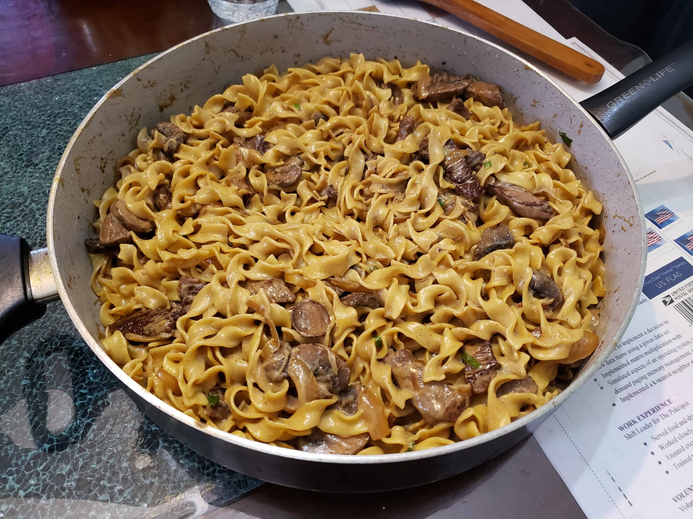

Beef Stroganoff

Ingredients:
- 8-12 oz Egg noodles
- 1 lb Top sirloin, cut into strips
- 2 tbsp Olive Oil
- 2 tbsp Butter
- 1 medium Onion
- 8 oz Brown mushrooms, thickly sliced
- 1 clove Garlic
- 1 tbsp Flour
- 1 cup Beef broth
- 3/4 cup Heavy cream
- 1/4 cup Sour cream
- 1 tbsp Worcestershire sauce
- 1/2 tsp Dijon mustard
- 1/2 tsp Salt
- 1/4 tsp Pepper
- 2 Green onion greens, minced
Instructions:
- Boil water and cook the egg noodles until they are ready.
- Meanwhile, in a large deep pan over medium-high heat, add olive oil and sear the sliced beef strips in a single layer, cooking 1 minute per side without stirring. Sear beef in batches to ensure that you do not overcrowd the pan. Remove the beef and reserve.
- Add the butter to the pan and sauté the onion and mushrooms until all the liquid evaporates and the onion and mushrooms are soft, while making sure to scrape up all the browned bits on the pan.
- Add the minced garlic and sauté for 1 minute, then add the flour and sauté for another minute while stirring constantly.
- Add in the beef broth and heavy cream and mix while again making sure to scrape up all the browned bits on the pan. Let simmer for 2 minutes or until slightly thickened.
- In a separate small bowl, stir a few tablespoons of the sauce into the sour cream to temper it so the sour cream doesn’t curdle. Then add the sour cream to the pan while stirring constantly.
- Stir in the Worcestershire sauce, dijon mustard, salt, and pepper and continue simmering until the sauce is creamy. Add the beef with any accumulated juices back to the pan and bring just to a simmer or until beef is heated through.
- Add in the cooked noodles and minced green onion greens and mix constantly until well incorporated and heated through.